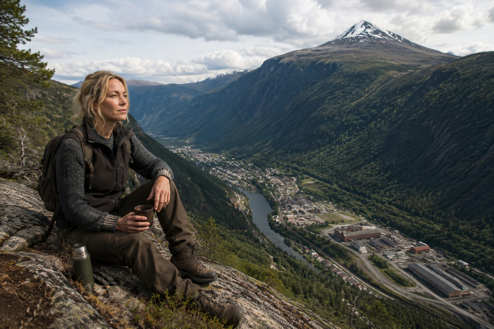
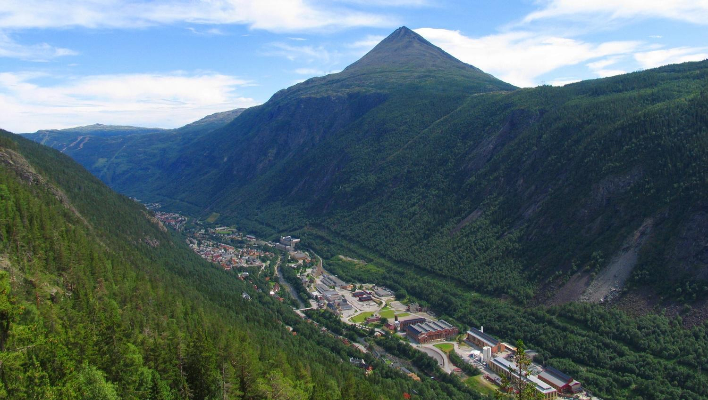
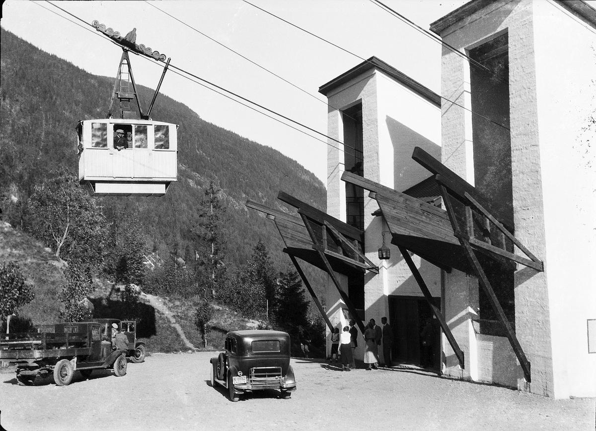
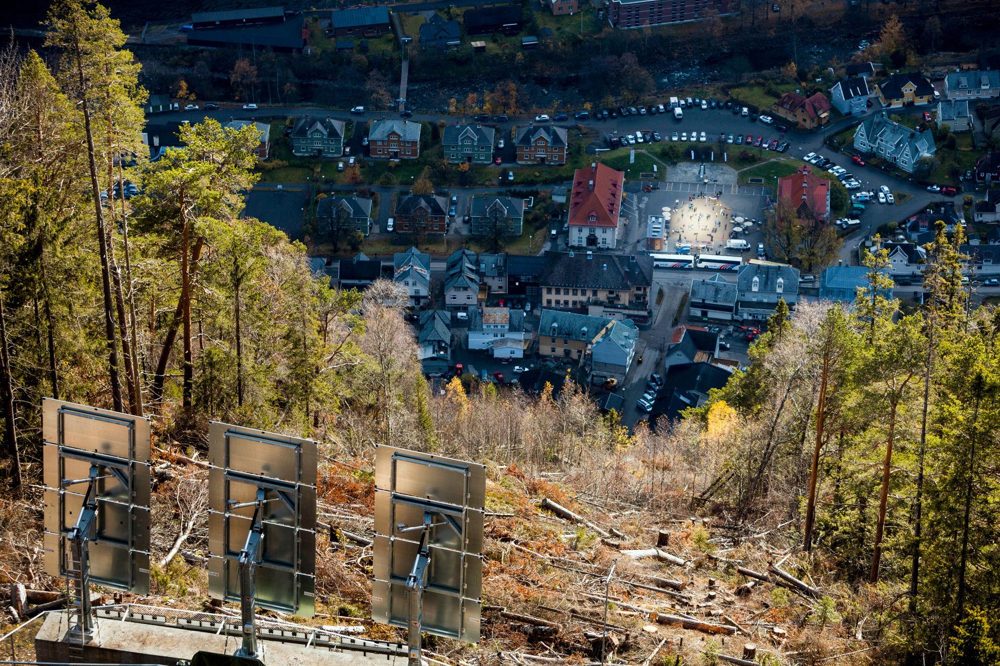
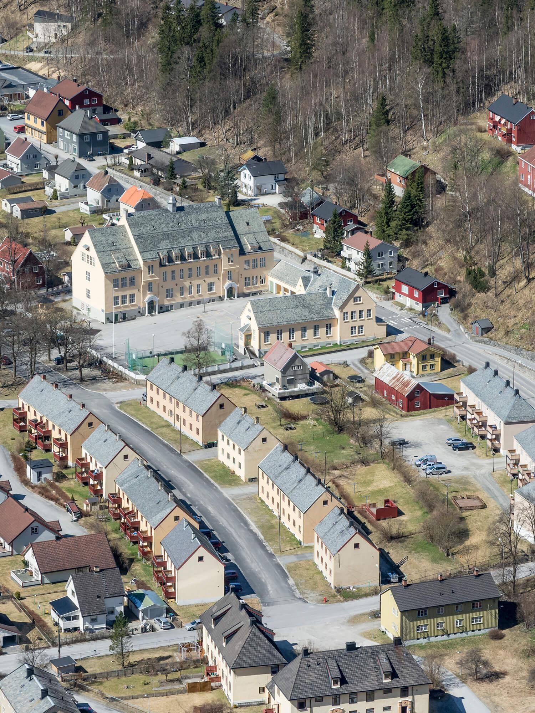
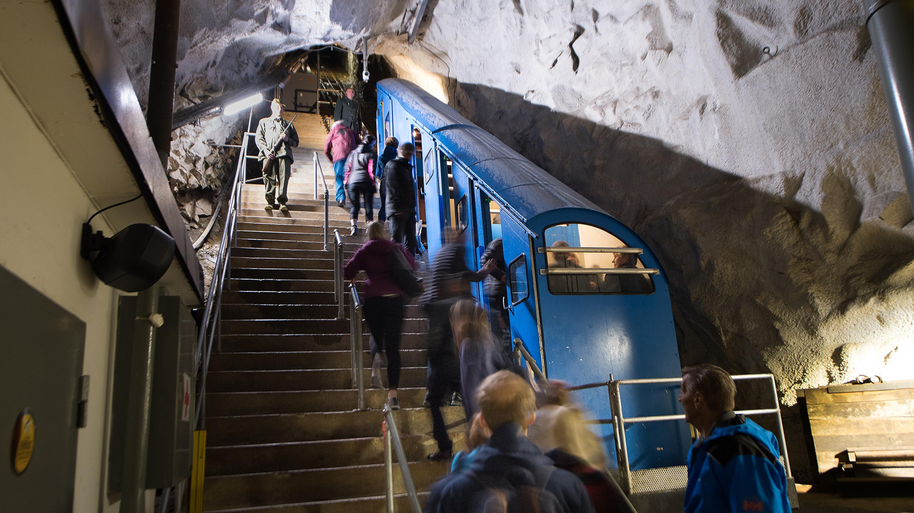

ØSTLANDET · NORGE
Rjukan
RJUKAN · HISTORIE
—
NORGE · ØSTLANDET
Rjukan
Klikk et punkt for å se hva det er — eller zoom selv med musehjul/fingre
GUIDEIngrid
💬 Klikk et tema for å utforske — eller spør Ingrid direkte